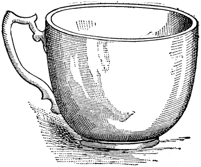
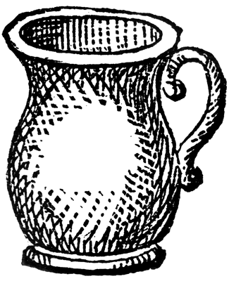

3 tazas de aguardiente
3 tazas de aguapanela
6 astillas de canela
1 limón y azúcar para escarchar

Se mezclan el agua de panela y el aguardiente, se agrega la canela y, sin dejarlo hervir, se calienta al baño de María. Se sirve caliente en jarritas de barro o copas de vidrio gruesas, escarchadas. Para escarchar se untan los bordes con limón y luego se impregnan con azúcar.
A medio real de leche, ocho yemas muy batidas, una copita de vino, una copita de vino, se pone en punto de dulce y se pone al fuego hasta que haga arruga.
Manual de Artes y Oficios,
cocina y repostería.
Bogotá, 1853.
2 huevos
4 cucharadas de azúcar
1 taza de leche hirviendo
2 copas de brandy, coñac, whisky o aguardiente
Nuez moscada o canela molida al gusto
Se baten las yemas de los huevos con la mitad del azúcar y dos cucharadas de leche caliente. Se vierte el resto de la leche y se revuelve hasta que espese. Se incorpora el licor y se baja del fuego. Se baten las claras a punto de nieve, con el resto del azúcar, se incorpora a la bebida y se espolvorea con canela o nuez moscada molida.
Por cada pocillo de tinto, se le añade media copita de aguardiente o brandy, se añade azúcar al gusto. Suele tomarse para templar el espíritu en los días fríos.
Casi estoy convencido de que este vecindario puso en ejecución el inicuo procedimiento de envenenar nuestras tropas con chicha, pero afortunadamente no las hemos perdido todas.
Simón Bolívar.
5 kilos de maíz blando en grano
2 litros de miel
20 litros de agua
Helecho silvestre
Se muele el maíz. A esta masa se le agrega un poco de miel y agua, de manera que quede bien remojada. Se pone en una olla (preferiblemente de barro) por 15 días para que se «apiche» o fermente. Se muele de nuevo y se pone más agua-miel hasta obtener una masa suave. Se hacen bolas con esta masa, a las que se les hace con los dedos unos huequitos en forma de cruz. Se cubre el fondo y las paredes de una olla de barro con hojas de helecho silvestre y se llena de agua. Se ponen las bolas a cocinar en al fuego muy lento, agregando agua si es necesario. Se cuela y se le agrega agua fresca hervida y miel. Se tapa la olla y se deja fermentar por diez o quince días, agregándole diariamente un poco de miel y revolviendo para que se disuelva.
6 litros de agua
½ libra de maíz amarillo
½ libra de maíz blanco
½ libra de garbanzo
½ libra de trigo
½ libra de cebada
½ libra de haba
½ libra de arveja
1 pata de res
1 estrella de anís
Miel al gusto
Se tuestan los granos anteriores y luego se muelen, se pasa por el cedazo esta harina con el fin de cernirla.
La harina ya cernida se remoja con agua de panela, se sacan porciones y se envuelven en hoja de plátano o sagú, se amarran y se cocinan en 4 litros de agua y se dejan fermentar por 3 días.
Se cocina la pata en 4 litros de agua hasta que esté blanda. Se muele la masa de nuevo y se mezcla con el caldo de pata, la miel y se deja fermentando varios días, agregándole más miel, agua fresca y rebulléndola esporádicamente.
Algunas veces comí con ella el dulce en un mismo plato, oh! qué dulce tan dulce! y bebí el agua en un mismo vaso, tocado antes por sus labios, más lindos que las flores! ¡Oh chocolate del señor Canónigo, enlazado con los recuerdos de mi amor! ¿Cómo es posible que yo te olvide?
Juan Francisco Ortiz (1808–1875).
“Una taza de chocolate” en Cuadros de costumbres,
Biblioteca Aldeana de Colombia, 1936.
Vieja tradición bogotana, desde los tiempos de la Colonia. Se sirve generalmente a las 5 o 6 de la tarde. Consiste en chocolate cocinado en leche o en agua, acompañado con un tamal bogotano o huevos pericos, colaciones, pan de yuca, almojábanas o cualquier otro acompañamiento.
Aida Martínez, en su libro Mesa y cocina en el siglo xix. Colombia, afirma:
De origen hispánico, al menos en la procedencia de sus componentes, se acostumbra aún como refresco el masato. Los hay diversas clases y usualmente su concentración alcohólica es baja. Se prepara de cualquier cereal. El de arroz se denomina guarruz. Aunque extendido por todo el país, nunca alcanzó la popularidad de su hermana, la chicha.
4 litros de agua
1 libra de azúcar
2 tazas de arroz lavado y puesto en remojo
1 astilla de canela
4 clavos de olor
1 hoja de naranjo (opcional)
Canela molida para espolvorear
Se prepara un almíbar con poco menos de un litro de agua y el azúcar hasta obtener punto de hilo. Aparte se pone a cocinar el arroz a fuego medio-bajo con tres litros de agua durante una hora aproximadamente, o hasta que ablande muy bien y abra el grano completamente. Si es posible, se añade más agua durante la cocción a medida que se vaya consumiendo. Se retira del fuego y se deja reposar.
Se cuela el arroz exprimiéndolo, se reserva el agua y se desecha el grano. Agregarle al agua del arroz el almíbar previamente preparado, la canela los clavos y la hoja de naranjo. Se cocina esta mezcla durante 30 minutos revolviendo constantemente con una cuchara de palo. Se refrigera en jarras de vidrio con tapa o se conserva a temperatura ambiente en olla de barro con tapa hasta que fermente ligeramente. Sírvase en pequeños vasos espolvoreándolo con canela molida. Es perfecto para acompañar la mantecada y las colaciones de las onces.
1 botella de aguardiente
1 libra de azúcar
5 tazas de agua
1 ramo de hierbas de mejorana, siempreviva y aroma (hinojo)
1 astilla de canela
1 cucharada de jugo de limón
Se ponen las hierbas en el aguardiente durante 30 días hasta que suelten color y aroma. Se prepara un almíbar con el agua, el azúcar y el limón, se mezcla con el aguardiente y se sirve, o se guarda bien tapado. También se prepara con limoncillo, moras, hierbabuena, cáscaras de mandarina o de naranja agria, hojas de naranjo, menta, romero, etc. Se sirve a temperatura ambiente.
1 taza de leche
1 taza de azúcar o una lata de leche condensada
5 yemas
1 taza de crema de leche
½ botella de ron, brandy, whisky o aguardiente
1 cucharadita de nuez moscada rallada
En una olla antiadherente se hierve a fuego medio la leche junto con el azúcar, vigilando que no se derrame.
Aparte, se baten las yemas en un tazón mediano, se vierte un poco de leche caliente y se incorpora esta mezcla a la olla. Se revuelve rápido y constantemente con una cuchara de palo hasta que espese. Se retira del fuego, se tapa y se deja enfriar.
Luego se pone la mezcla por tandas en la licuadora, alternando con la crema de leche y el licor. Se agrega nuez moscada. Se envasa en botellas o licoreras y se refrigera hasta servir.
8 curubas
1½ litro de leche
½ taza de agua
1 taza de azúcar
½ taza de crema de leche
Se parten las curubas y se vacían con una cucharita. La pulpa se mezcla con agua, se bate o licúa, se cuela para sacarle las semillas. Se agrega la leche y el azúcar, se licúa con un poco hielo partido, se le agrega la crema de leche y se bate por un minuto más. Se puede hacer también con guanábana, feijoa o mora.
El que no ha subido con su novia a Monserrate
no sabe lo qu’es canela ni tamal con chocolate
|
 |